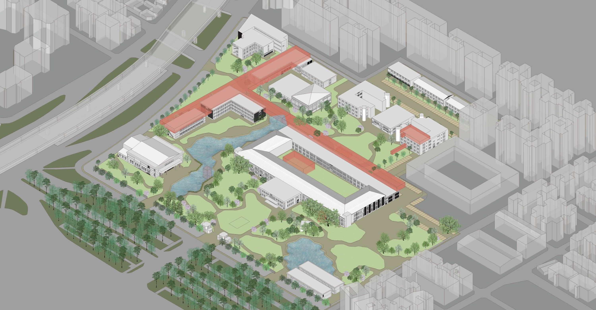
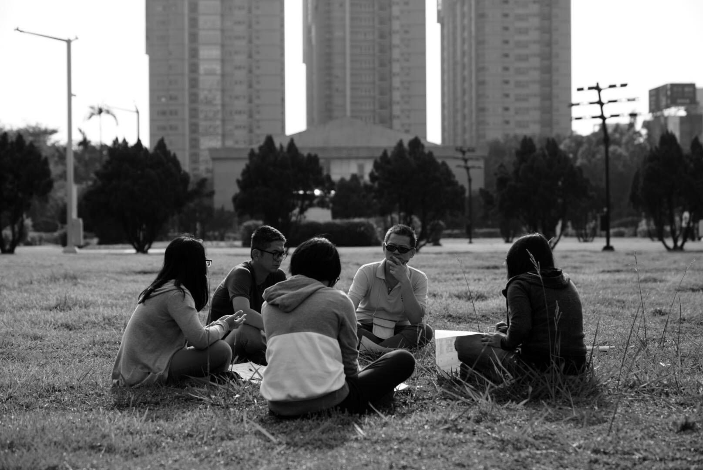
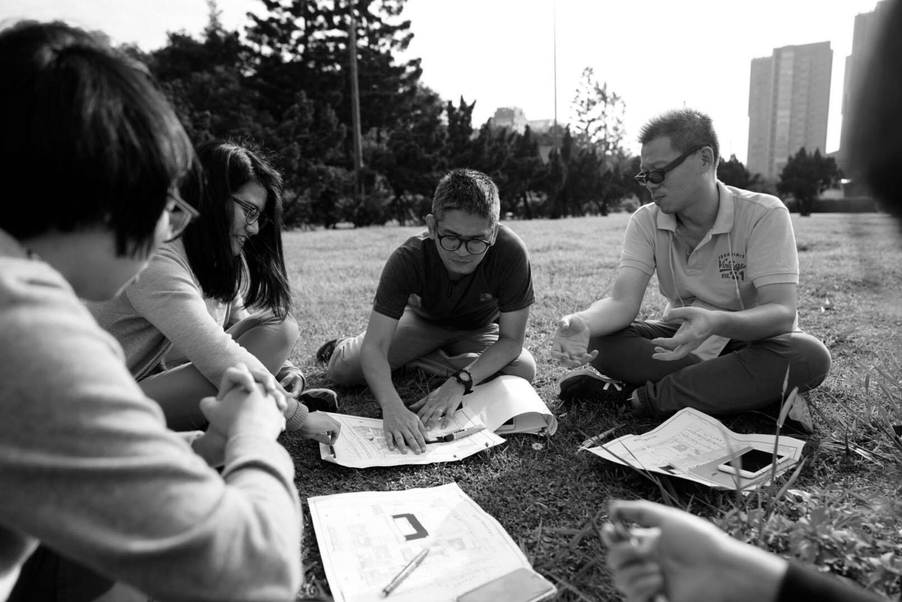
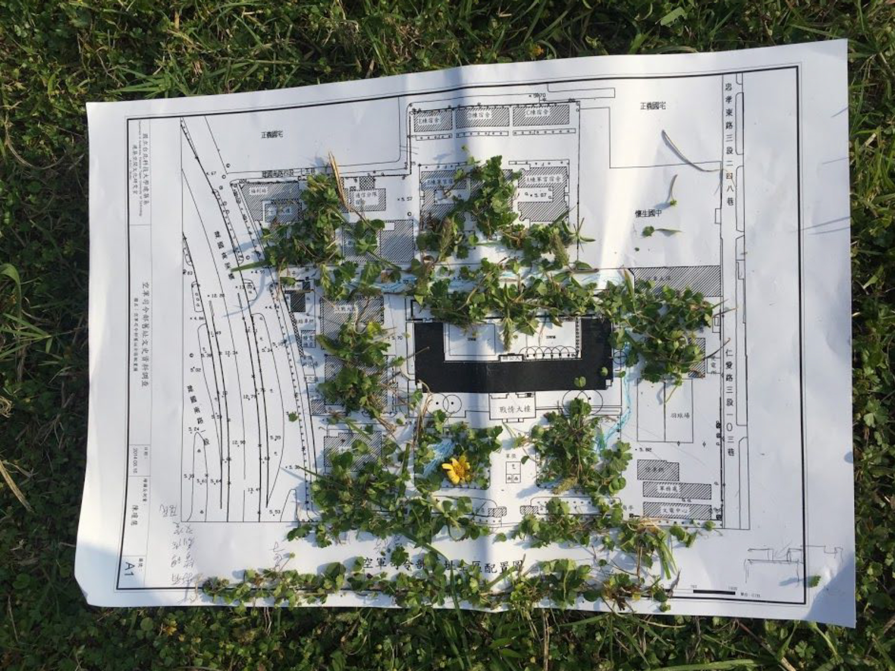
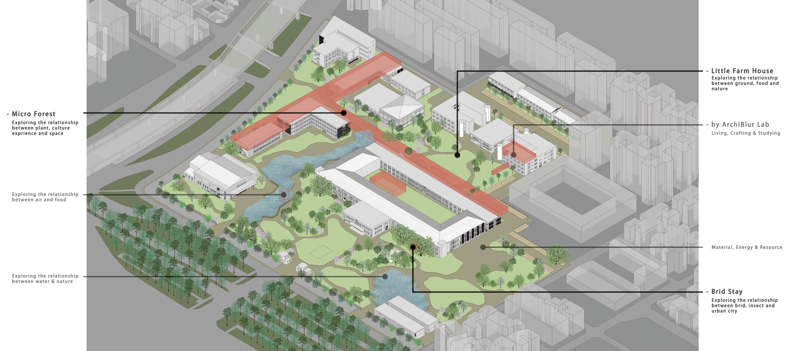
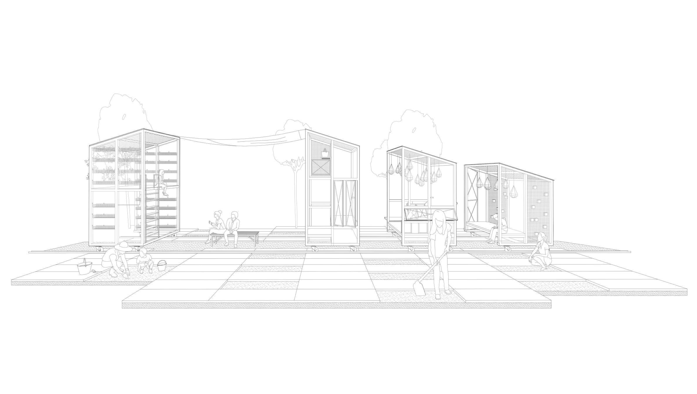
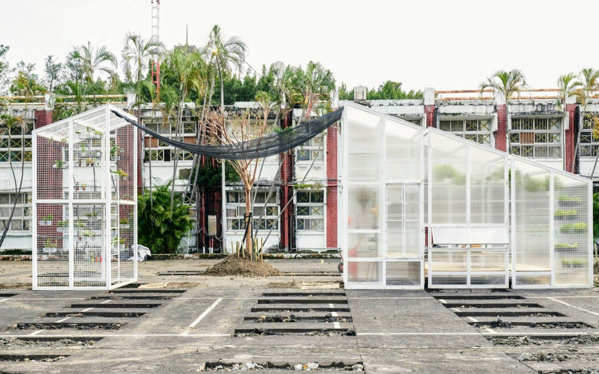
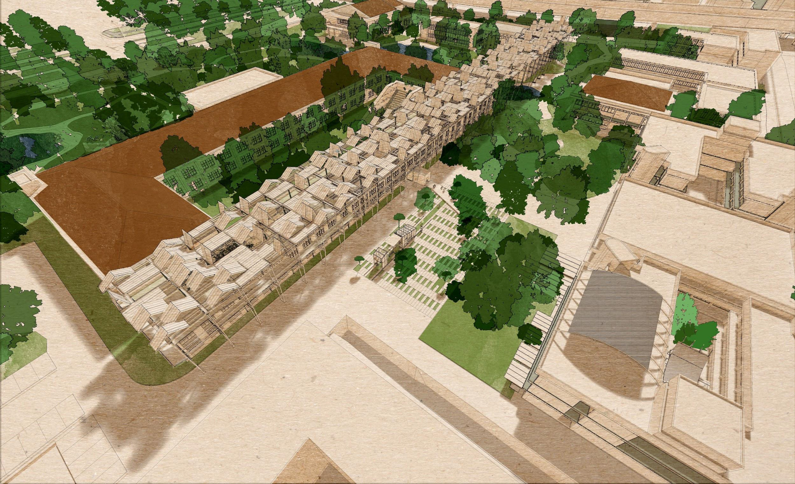
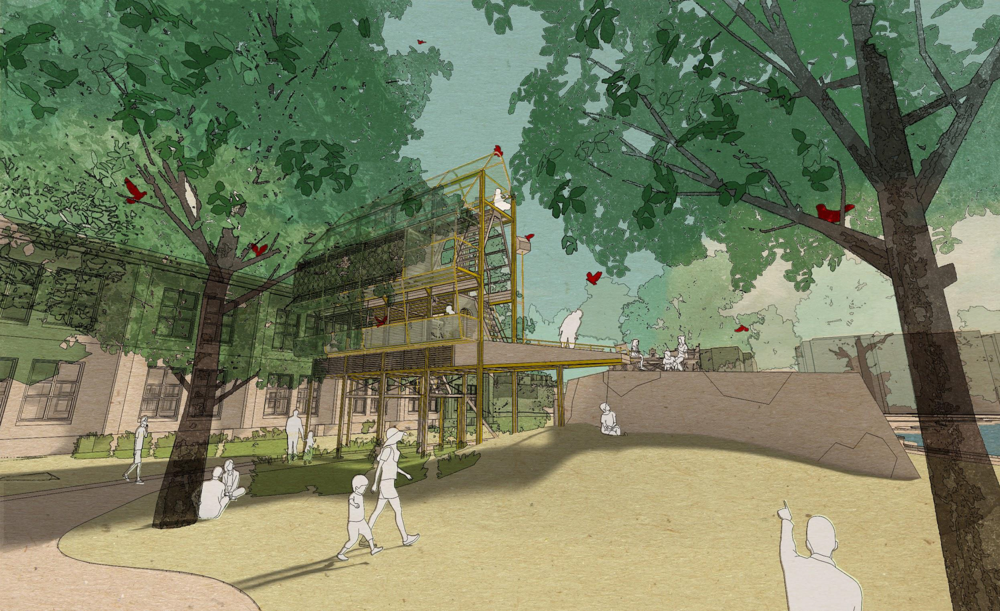

Collective Negative Space Village
Taiwan Air Force
Institution
Wong Wei Ping
Alex Tan
Andrew Leng
Lim Huei Miin
Ele Mun
Suzzane Kan




作為整個實驗建築的實構體現，窩工房（tetawowe）、共感地景（ArchiBlur Lab）與其他合作夥伴拓展出一系列負育建築／空間。其中，林中小屋系列之一的園丁小屋（Little Farm House）實構原型，將結合柏油路被開挖出來的場域，呈現農耕實驗建築，以及農耕內置於生活空間中的實質體驗；其他呈現在圖紙上的，還包括林中小屋系列之鳥居（Bird Stay），探索鳥類／昆蟲／大自然之間的關係；以及大型附屬建築體 Micro Forest，探討植物、文化實驗與空間共存的關係。
As a built manifestation of this experimental architectural project, tetawowe, ArchiBlur Lab, and other collaborators have developed a series of subtractive architectural and spatial interventions. Among them, the built prototype of Little Farm House from the Forest Cabin series is conceived in relation to the excavated asphalt ground, presenting an experiential integration of farming architecture and everyday living. Also represented in the drawings are Bird Stay from the Forest Cabin series, which explores the relationship between birds, insects, and the natural environment, as well as the larger ancillary structure Micro Forest, which investigates the coexistence of plants, cultural experimentation, and space.





